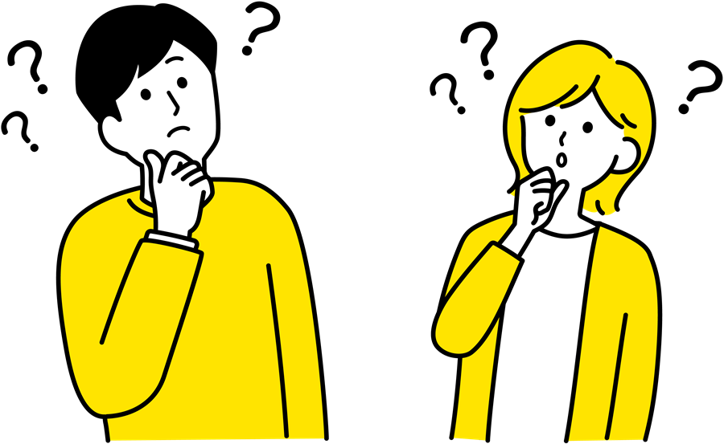

ADMISSIONS
入試情報・学生サポート
※本ページの日程・金額・要件はすべてサンプルです。正式な情報は必ず最新の募集要項でご確認ください。
SCHEDULE入試日程（サンプル）
← 表は横にスクロールできます →
選抜区分
出願期間
試験日
合格発表
{{ r.k }}
{{ r.a }}
{{ r.b }}
{{ r.c }}
HOW TO APPLY出願の流れ・必要書類
{{ s.no }}
{{ s.t }}
{{ s.d }}
主な必要書類（例）
●{{ d }}
出願前のチェックポイント
●{{ d }}
TUITION & SUPPORT学費・奨学金
{{ c.en }}
{{ c.t }}
{{ c.v }}
{{ c.d }}
FAQよくあるご質問

A
{{ q.a }}
FOR PARENTS保護者の方へ

受験生の進路選びを支える保護者の皆さまに向けて、学費・奨学金の相談窓口や、卒業後の進路に関する資料をご用意しています。オープンキャンパスでは保護者向け説明会も開催予定です。
●保護者向け説明会について ●保護者向け資料を請求する ●学費・奨学金の相談をする